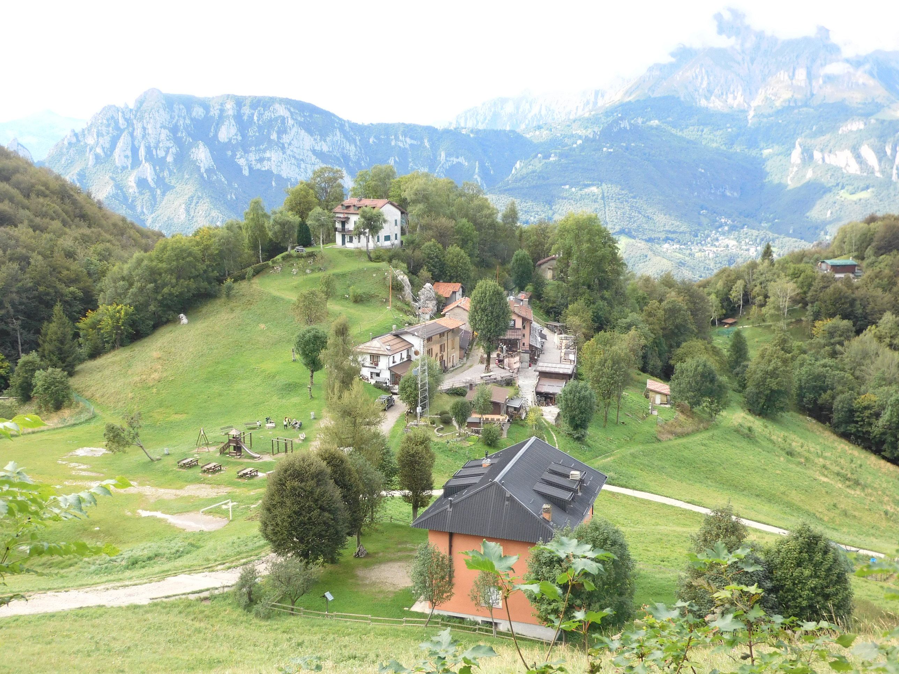
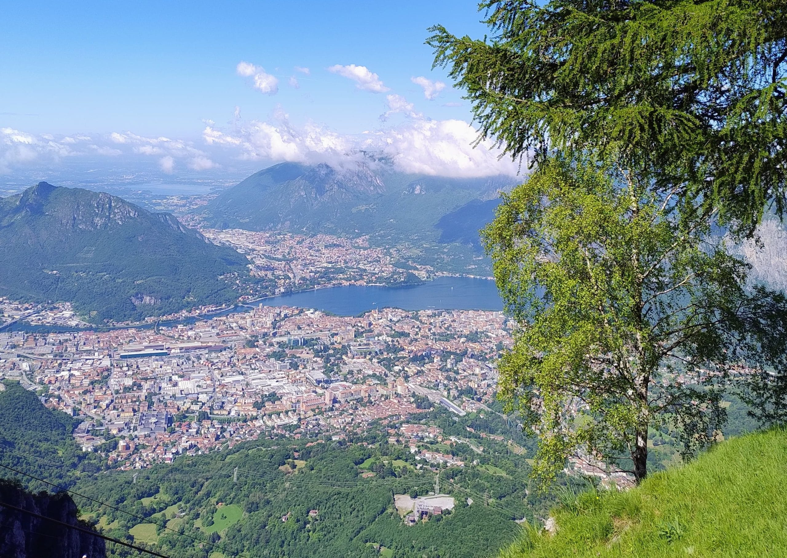

Il Pizzo d'Erna è una montagna delle Prealpi Bergamasche Occidentali facente parte del gruppo del Resegone, posta nel territorio del comune di Lecco. L'altitudine massima è di 1375 m s.l.m. e sulla sommità è presente l'altopiano dei Piani d'Erna, raggiungibile da una funivia che parte dalla località lecchese di Versasio.

La splendida vista su Lecco e il lago di Como dai Piani d'Erna
